Examples
What you can build with Orbit. The first ones are full pages with live controls; start with the universe model, it shows how size works. The rest are smaller pieces with the code open under them: edit it, or copy the whole page.
For ready-made components, see Orbit Kit.
Full pages
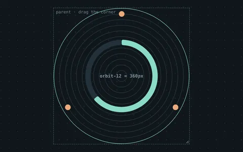
The universe modelResize the space and watch the system follow: lanes, reach and size.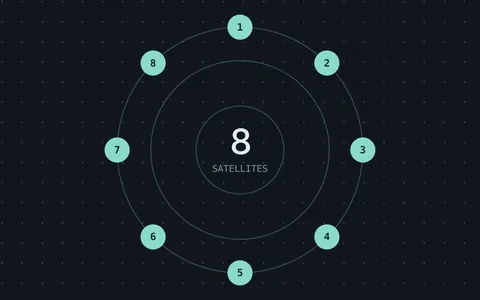
PlaygroundSatellites, stacked arcs and progress shapes with live controls.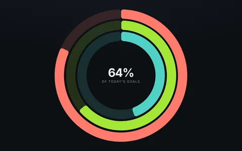
Progress ringsThree goals, rounded ends, one thickness for all.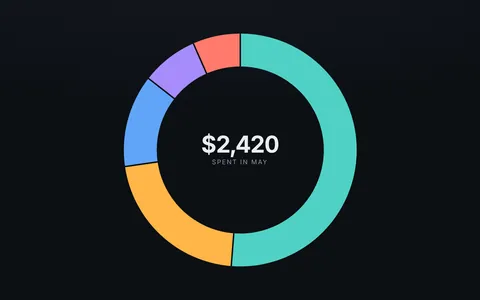
Donut chartStacked values with a hoverable legend.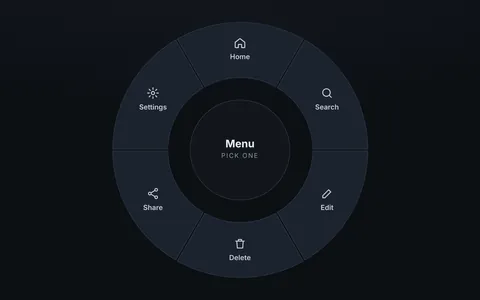
Radial menuSix wedges with icons, hover and keyboard. SpeedometerTicks, numbers, zones and a needle on one 270° dial.
SpeedometerTicks, numbers, zones and a needle on one 270° dial. KnobDrag, scroll or use the keys; a system inside a satellite.
KnobDrag, scroll or use the keys; a system inside a satellite.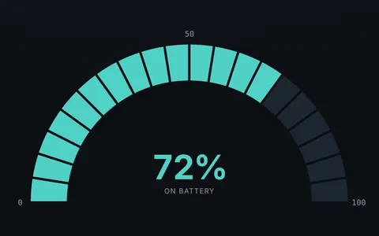
Half gaugeA battery in 20 cells on a 2:1 universe.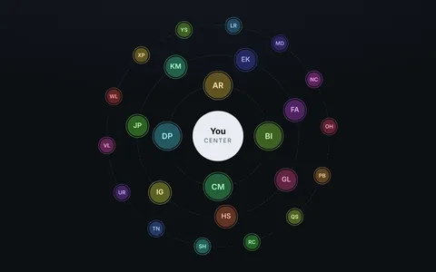
Team mapFaces on three rings, sized by closeness.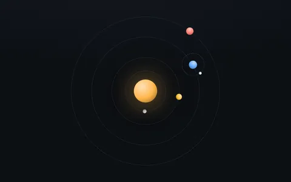
Nested systemsA moon orbiting a planet orbiting a sun.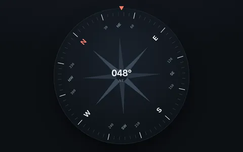
CompassA card that turns under a fixed mark.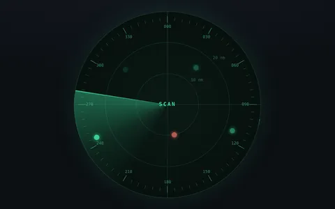
RadarA sweeping beam and contacts that flash in time.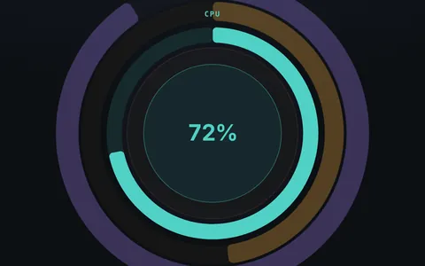
Depth layersComposite layers in 3D, with tilt.
Gauges
 180° gaugeFive named zones and a needle on a half circle.
180° gaugeFive named zones and a needle on a half circle. 240° gaugeA stepped speedometer: bands light up with the speed.
240° gaugeA stepped speedometer: bands light up with the speed. Fuel gaugeA 90° dial with E, F and a reserve, in a box cut to fit.
Fuel gaugeA 90° dial with E, F and a reserve, in a box cut to fit.
Progress rings
 Progress with backgroundA fill over its track, number in the middle.
Progress with backgroundA fill over its track, number in the middle. Dashed progressTen segments for progress counted in steps.
Dashed progressTen segments for progress counted in steps. Progress with handleA circular slider you can drag.
Progress with handleA circular slider you can drag. Stacked progressThree live metrics, labeled in the open quarter.
Stacked progressThree live metrics, labeled in the open quarter.
Knobs and menus
 Knob with progress barA gain knob whose arc grows from the center.
Knob with progress barA gain knob whose arc grows from the center. LED knobEleven LEDs and a knob that snaps between them.
LED knobEleven LEDs and a knob that snaps between them.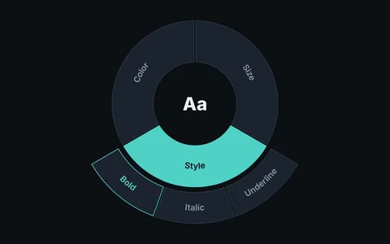
Pie menuWedges that open their options on an outer ring.
Charts
 Donut chartFive arcs with values, and two weeks to switch.
Donut chartFive arcs with values, and two weeks to switch. Pie chartSlices that slide out on hover and focus.
Pie chartSlices that slide out on hover and focus. Sunburst chartTwo levels of nested data that line up on their own.
Sunburst chartTwo levels of nested data that line up on their own.
Watches and clocks
 Minimalist analog clockTicks, numbers and three hands, on the real time.
Minimalist analog clockTicks, numbers and three hands, on the real time. ChronographThree sub-dials, each its own system, and a working stopwatch.
ChronographThree sub-dials, each its own system, and a working stopwatch. Roman numeral clockNumerals along the radius, with spin-lock and flip.
Roman numeral clockNumerals along the radius, with spin-lock and flip. Smartwatch faceTime and date as curved text along the bezel.
Smartwatch faceTime and date as curved text along the bezel. Circular timerTurn the wheel to set it; three rings share one angle.
Circular timerTurn the wheel to set it; three rings share one angle.
Calendars
 Circular year calendarSeasons, months and days on one dial; step through the year.
Circular year calendarSeasons, months and days on one dial; step through the year. Chronodex day plannerA day as wedges; click one to plan that hour.
Chronodex day plannerA day as wedges; click one to plan that hour.
Mandalas
 Geometric square mandalaNested squares, copied and turned; one to eight folds.
Geometric square mandalaNested squares, copied and turned; one to eight folds. Radial symmetry mandalaRings of circles with six, eight or twelve folds.
Radial symmetry mandalaRings of circles with six, eight or twelve folds. Starter patternsA hexagonal flower and a rosette.
Starter patternsA hexagonal flower and a rosette.
Interfaces and diagrams
 Car dashboardA live clock and two pods, each its own system.
Car dashboardA live clock and two pods, each its own system.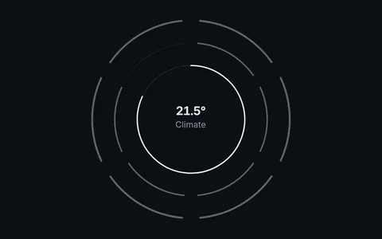
Layered status ringsChannels stacked in depth; alerts come to the front.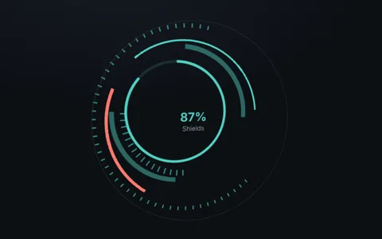
Sci-fi interfaceArcs and dashes at different depths, tilting with the pointer.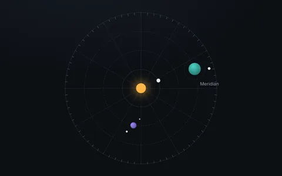
Abstract orbital mapPlanets that are systems of their own, each ring turning.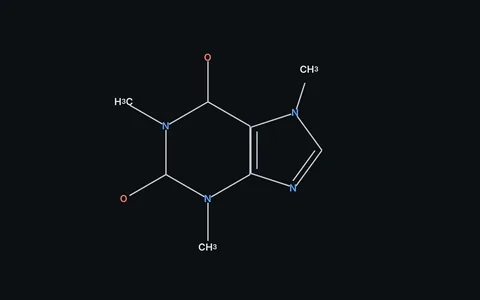
Chemical structureCaffeine, from sides and satellites.